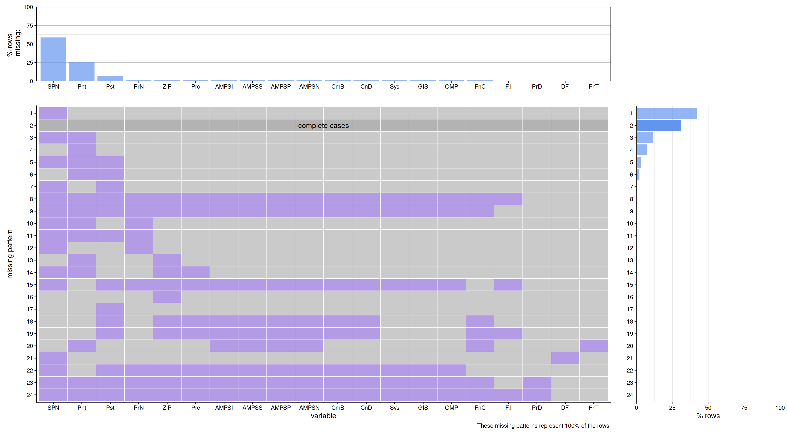
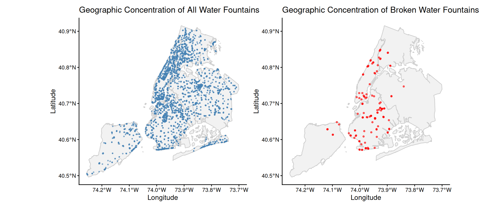
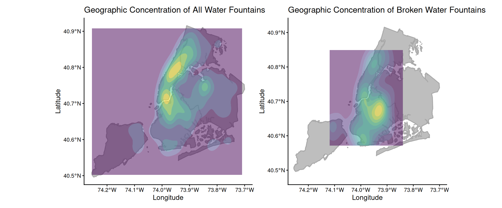
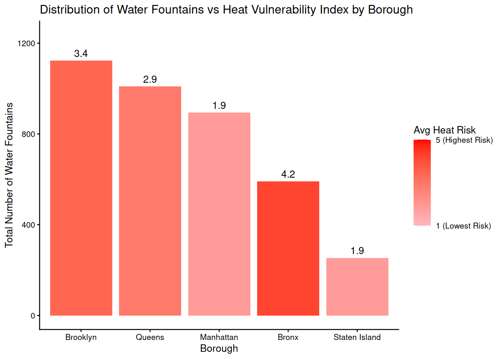
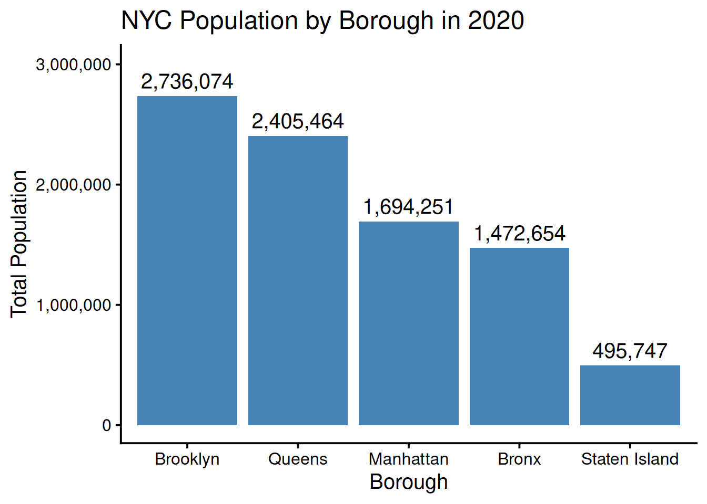
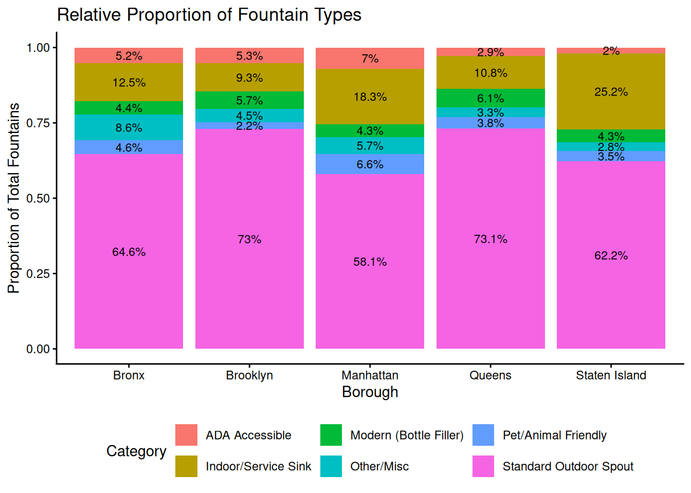

df <- read.csv("data/coolit.csv", na.strings = "")
library(redav)
plot_missing(df, num_char = 3, max_cols = 20)
Shrina Dong
I chose the Cool It! NYC 2020 - Drinking Fountains dataset because growing up in NYC, I’ve noticed that the reliability of our public infrastructure systems has become a growing concern for New Yorkers. My interest specifically in water infrastructure began personally: while I was running along the Hudson River on a hot day, I had no water and was exhausted by the heat. I stopped at five consecutive water fountains, only to find every single one of them broken. I realized that what was initially a personal inconvenience posed a much larger public health issue. As climate change accelerates and we continue to see worsening effects, such as increased temperatures, reliable public water access is critical. It is especially important that we ensure that cities with large populations, such as NYC, have strong water infrastructure systems in place to support denser areas. In this project, I will investigate any systematic failures in NYC’s water infrastructure, as well as the distribution and accessibility of water fountains across the boroughs.
The “Cool It! NYC 2020 - Drinking Fountains” dataset is part of a broader citywide plan to expand public cooling features, especially during heat emergencies. It is one of three datasets as part of this initiative – the other two represent Spray Showers and Cooling Sites. The data was gathered by the NYC Department of Parks and Recreation (DPR), and formatted into 25 columns, with each of the 3871 rows representing a unique drinking fountain. Some key variables include DF.Activated (Status: Activated, Not Yet Activated, Broken, or Under Construction), FountainType, and FountainCount (# of fountain fixtures). It’s important to note that this data is from 2020 and has not been updated since so any changes since 11/27/2020 will not be reflected.
df <- read.csv("data/coolit.csv", na.strings = "")
library(redav)
plot_missing(df, num_char = 3, max_cols = 20)
The most common missing-value pattern is the one with the SubPropertyName missing (Pattern 1), with over 40% of the rows containing this pattern and over half of the fountains missing the SubPropertyName. When taken in the context of another similar column, PropertyName, I can conclude that this is likely a structural and purposeful omission. Since PropertyName already provides the primary park/playground that the fountain is located in, there is no need to further specify the SubProperty Name unless the park is large enough to have distinct zones, such as with Ferry Point Park. Thus, this missing pattern is not random or a result of failure in data collection, but is conditional. It gives us a valuable piece of information that is otherwise not provided: the relative size of these park areas. The prevalence of certain missing patterns also reveals a prioritizing process in data collection. Missing Patterns 1-7 are all some combination of the variables SubPropertyName, Painted, and Position, whereas variables like ParkDistrict, DF.Activated, and FountainType rarely have any missing values. When it comes to data collection, factors that define the identity and availability of the fountain are treated as required, whereas qualitative factors are treated as supplementary “nice-to-have” data.
library(tidyverse)
library(sf)
library(patchwork)
boroughs <- read_sf("data/nyc_boroughs/nybb.shp")
# Transform SP Coordinates to GPS Coordinates
boroughs <- st_transform(boroughs, crs = 4326)
# Make the x, y values numeric
df_numeric <- df |>
mutate(x_numeric = as.numeric(str_remove_all(x, ",")),
y_numeric = as.numeric(str_remove_all(y, ",")))
# Define the current x, y as State Plane Coordinates for R
df_sp <- st_as_sf(df_numeric,
coords = c("x_numeric", "y_numeric"),
crs = 2263)
# Transform SP Coordinates to GPS Coordinates
df_gps <- st_transform(df_sp, crs = 4326)
# Overwrite current x and y columns with the transformed GPS Coordinates
cool <- df_gps |>
mutate(x = st_coordinates(geometry)[,1],
y = st_coordinates(geometry)[,2]) |>
st_drop_geometry()
broken <- cool |>
filter(DF.Activated == "Broken")
p1 <- ggplot() +
geom_sf(data = boroughs, fill = "gray95", color = "gray80", linewidth = 0.5) +
geom_point(data = cool,
aes(x = x, y = y),
color = "steelblue",
size = 0.5,
alpha = 0.6) +
coord_sf() +
theme_classic(12) +
labs(title = "Geographic Concentration of All Water Fountains",
x = "Longitude",
y = "Latitude")
p2 <- ggplot() +
geom_sf(data = boroughs, fill = "gray95", color = "gray80", linewidth = 0.5) +
geom_point(data = broken, aes(x = x, y = y),
color = "red", size = 1, alpha = 0.6) +
coord_sf() +
theme_classic(12) +
labs(title = "Geographic Concentration of Broken Water Fountains",
x = "Longitude",
y = "Latitude")
p1 + p2
p3 <- ggplot() +
geom_sf(data = boroughs, color = "darkgray", fill = "gray", linewidth = 0.7) +
geom_density_2d_filled(data = cool,
aes(x = x, y = y, fill = after_stat(level)), alpha = 0.5) +
scale_fill_viridis_d(guide = "none") +
coord_sf(xlim = c(-74.25, -73.7), ylim = c(40.48, 40.92)) +
theme_classic(12) +
coord_sf() +
labs(title = "Geographic Concentration of All Water Fountains",
x = "Longitude",
y = "Latitude",
fill = "Relative Density")
p4 <- ggplot() +
geom_sf(data = boroughs, color = "darkgray", fill = "gray", linewidth = 0.7) +
geom_density_2d_filled(data = broken,
aes(x = x, y = y, fill = after_stat(level)), alpha = 0.5) +
scale_fill_viridis_d(guide = "none") +
coord_sf(xlim = c(-74.25, -73.7), ylim = c(40.48, 40.92)) +
theme_classic(12) +
labs(title = "Geographic Concentration of Broken Water Fountains",
x = "Longitude",
y = "Latitude",
fill = "Relative Density")
p3 + p4
The longitude (x) and latitude (y) values in the dataset are NYC State Plane Coordinates, which are measured in feet. To convert back to standard decimal degrees/GPS coordinates, I did some extra research on how to use functions in the sf package, mainly using this guide.
My analysis contains two spatial visualizations: a scatter map, and a filled density contour map, showing comparisons bwtween the total number of water fountains and the number of broken water fountains. The scatter map provides a more-granular view of fountain units across NYC while the filled density contour map offers more insight into the clustering of these fountains. Manhattan has the highest density of water fountains, yet Brooklyn has the highest density of broken water fountains despite having most water fountains. The contrast between the two graphs in both visualizations highlights a crtical infrastructure issue. In areas, like Manhattan, with a greater density of water fountains, one broken fountain might just be a minor inconvenience because there is likely another one nearby. However, in areas, like Northern Brooklyn, where there is already a lower density of water fountains, a single broken fountain poses a larger problem of loss of access. This signals a lack of operational resources and staff in certain boroughs and that the city should potentially distribute water fountains more equally across the boroughs. At the same time, one may argue that this distribution of fountains is due to factors like heat vulnerability and population – this is exactly what I will investigate in the next section.
library(knitr)
hvi <- read.csv("data/hvi.csv")
avg_hvi <- hvi |>
mutate(Borough = str_sub(NTACode, 1, 2)) |>
mutate(Borough = recode(Borough,
"BX" = "Bronx",
"BK" = "Brooklyn",
"MN" = "Manhattan",
"QN" = "Queens",
"SI" = "Staten Island")) |>
group_by(Borough) |>
summarize(avg_hvi = mean(HVI_RANK, na.rm = TRUE))
fountain_counts <- cool |>
# last two rows are lowercase m
mutate(Borough = toupper(Borough)) |>
mutate(Borough = recode(Borough,
"X" = "Bronx",
"B" = "Brooklyn",
"M" = "Manhattan",
"Q" = "Queens",
"R" = "Staten Island")) |>
group_by(Borough) |>
summarize(total_fountains = n())
combined <- inner_join(fountain_counts, avg_hvi, by = "Borough")
ggplot(combined,
aes(x = fct_reorder(Borough, total_fountains, .desc = TRUE), y = total_fountains, fill = avg_hvi)) +
geom_col() +
geom_text(aes(label = round(avg_hvi, 1), vjust = -0.5)) +
scale_fill_gradient(low = "lightpink",
high = "red",
name = "Avg Heat Risk",
limits = c(1, 5),
breaks = c(1, 5),
labels = c("1 (Lowest Risk)", "5 (Highest Risk)")) +
theme_classic(10) +
expand_limits(y = max(combined$total_fountains) * 1.1) +
labs(title = "Distribution of Water Fountains vs Heat Vulnerability Index by Borough",
x = "Borough",
y = "Total Number of Water Fountains")
nyc_pop <- data.frame(Borough = c("Bronx", "Brooklyn", "Manhattan", "Queens", "Staten Island"),
pop_2020 = c(1472654, 2736074, 1694251, 2405464, 495747))
ggplot(nyc_pop, aes(x = fct_reorder(Borough, pop_2020, .desc = TRUE), y = pop_2020)) +
geom_col(fill = "steelblue") +
geom_text(aes(label = scales::comma(pop_2020)), vjust = -0.5) +
scale_y_continuous(labels = scales::comma) +
theme_classic(15) +
expand_limits(y = max(nyc_pop$pop_2020) * 1.1) +
labs(title = "NYC Population by Borough in 2020",
x = "Borough",
y = "Total Population")
fountain_comparison <- data.frame(
Borough = c("Bronx", "Brooklyn", "Queens", "Manhattan", "Staten Island"),
Avg_HVI = c(4.2, 3.4, 2.9, 1.9, 1.9),
Total_Fountains = c(591, 1123, 1009, 894, 254),
Population = c(1472654, 2736074, 2405464, 1694251, 495747)
)
# Number of fountains per 100,000 people
fountain_comparison$Fountains_per_100k <- round((fountain_comparison$Total_Fountains / fountain_comparison$Population) * 100000, 0)
fountain_comparison <- fountain_comparison[order(-fountain_comparison$Avg_HVI), ]
# Table
fountain_comparison |>
mutate(Population = scales::comma(Population)) |>
kable(col.names = c("Borough", "Avg Heat Risk (HVI)", "Total Fountains", "2020 Population", "Fountains per 100k People"),
caption = "Hydration Access: Fountains per 100,000 Residents vs. HVI",
align = "lrrrr")| Borough | Avg Heat Risk (HVI) | Total Fountains | 2020 Population | Fountains per 100k People |
|---|---|---|---|---|
| Bronx | 4.2 | 591 | 1,472,654 | 40 |
| Brooklyn | 3.4 | 1123 | 2,736,074 | 41 |
| Queens | 2.9 | 1009 | 2,405,464 | 42 |
| Manhattan | 1.9 | 894 | 1,694,251 | 53 |
| Staten Island | 1.9 | 254 | 495,747 | 51 |
Using the 2020 NYC Heat Vulnerabiltiy Index Dataset and the 2020 NYC Census, I created visualizations that show the total number of water fountains, the heat vulnerability/risk index, and fountain density by borough. There is a clearly inequitable distribution of water fountains: the Bronx, which faces the highest average heat risk (4.2), has the lowest relative fountain access with only 40 fountains per 100k people. In contrast, Manhattan and Staten Island, which share the lowest heat risk (1.9), enjoy significantly higher densities of 53 and 51 fountains per 100k people, respectively. Even though Brooklyn has the most number of fountains, it only has 41 fountains per 100k people despite it being the second-most vulnerable to heat emergencies. The boroughs that need cooling features the most are currently the least served on a per-capita basis. As climate change increases global temperatures, this misalignment between high heat vulnerability and low water resources density could pose a critical challenge for NYC’s public health infrastructure systems.
cool_borough <- cool |>
mutate(Borough = toupper(Borough)) |>
mutate(Borough = recode(Borough,
"X" = "Bronx",
"B" = "Brooklyn",
"M" = "Manhattan",
"Q" = "Queens",
"R" = "Staten Island")) |>
# Create 4 broader buckets for fountan type
mutate(Category = case_when(
str_detect(FountainType, "Bottle") ~ "Modern (Bottle Filler)",
str_detect(FountainType, "Dog|Trough") ~ "Pet/Animal Friendly",
str_detect(FountainType, "High Low|Accessible") ~ "ADA Accessible",
str_detect(FountainType, "Sink|Cooler|Indoor|Wall") ~ "Indoor/Service Sink",
str_detect(FountainType, "^[A-J]$|Pedestal|Monument|stone") ~ "Standard Outdoor Spout",
TRUE ~ "Other/Misc")) |>
group_by(Borough, Category) |>
summarize(count = n())
cool_proportions <- cool_borough |>
group_by(Borough) |>
mutate(pct = round((count / sum(count)) * 100, 1)) |>
ungroup()
ggplot(cool_proportions, aes(x = Borough, y = count, fill = Category)) +
geom_col(position = "fill") +
geom_text(aes(label = paste0(pct, "%")),
position = position_fill(vjust = 0.5),
size = 3) +
theme_classic() +
theme(legend.position = "bottom") +
labs(title = "Relative Proportion of Fountain Types",
x = "Borough",
y = "Proportion of Total Fountains")
The standard outdoor spout is the most common fountain type across all five boroughs, but Brooklyn and Queens rely most heavily on this model, making up about 73% of their total fountains. Standard outdoor spouts are older fountain models, which means they are often more prone to maintenance failures. In contrast, Manhattan water fountains are the most diverse accessibility-wise, with the highest proportions of ADA Accessible and Pet/Animal Friendly fountains. This disparity in feature diversity should be a critical concern for the city because water should be accessible to all groups. Accessibility in features is important because it ensures that vulnerable population groups, including those with mobility impairments, aren’t left out.
This project started out as a simple curiosity from a personal experience, but as I explored the data more, I realized how behind and inequitable NYC’s public infrastructure systems are despite its image as one of the most technologically-advanced and diverse cities. In the process of creating the visualizations themselves, I noticed just how many different ways I could visualize the same trends and learned to be more deliberate about how to best visualize trends in a way that would be easiest to interpret for the audience. A large limitation with this dataset is that it only includes data for 2020, a majority of which we spent in a global pandemic. Because of quarantine policies, there likley weren’t as many people outside actually using these public water fountains, so the number of broken fountains in this dataset may not be representative of usual conditons and is likley an underestimate. Moreover, the status of these fountains is recorded at one point in time, so it’s unclear how long these fountains remain active or broken and how long it takes to repair them. Moving forward, I’d love to work with data across multiple years to see if the city has taken any action and implemented policies regarding water accessibility as part of their Cool It initiative. Ultimately, it will be hard to resolve these issues overnight, but this project serves as a possible first-step in prioritizing the most vulnerable boroughs and populations when it comes to public health infrastructure.